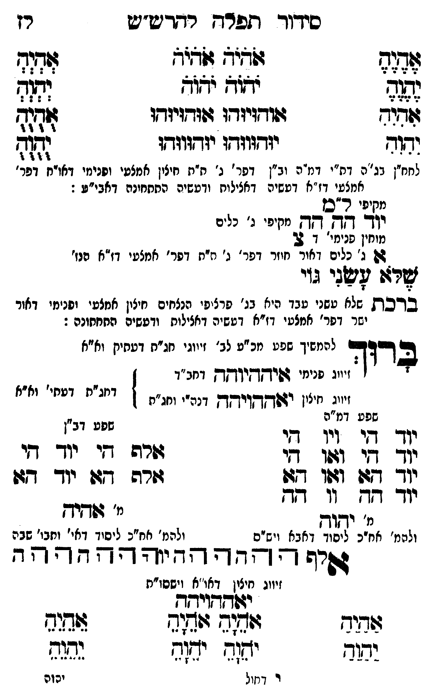

Neue Klartextfassung
=== טבלה === [טור ימין] אֶהֶיֶהֶ יֶהֶוֶהֶ אִהִיִהִ יִהִוִהִ [טור אמצעי] אֹהֹיֹהֹ אֹהֹיֹהֹ יֹהֹוֹהֹ יֹהֹוֹהֹ אוּהוּיוּהוּ אוּהוּיוּהוּ יוּהוּווּהוּ יוּהוּווּהוּ [טור שמאל] אְהְיְהְ יְהְוְהְ אֻהֻיֻהֻ יֻהֻוֻהֻ === סוף טבלה === [לחח"ן בג"ה דת"י דמ"ה וב"ן דפר' ג' ת"ת חיצון אמצעי ופנימי דאו"ח דפר' אמצעי דז"א דעשיה דכללות ורביעיה התחתונה דאבי"ע:] [מקיפי ל"ם] יוד הה הה [מקיפי ג' כלים] [מוחין פנימי דצ'] צ א ג' [ג' כלים דאור חוזר דפר' ג' ת"ת דפר' אמצעי דז"א הנז'] שלא עשני גוי: ■ ברכת שלא עשני עבד ■ [היא בג' פרצופי הנצחים חיצון אמצעי ופנימי דאור ישר דפר' אמצעי דז"א דעשיה דכללות ורביעיה התחתונה:] ברוך [להמשיך שפע מכ"ע לב' זיווגי חג"ת דעתיק וא"א] [זיווג פנימי איההיוהה דחב"ד] [זיווג חיצון יאההויהה דכ"ח ותו"ח] [דחג"ת דעתי' וא"א] === טבלה === [טור ימין — שפע דמ"ה] יוד הי ויו הי יוד הי ואו הי יוד הא ואו הא יוד הה וו הה [מ' יהוה] [ולכת' חב"ד ליסוד דאבא ויש"ס] [טור שמאל — שפע דב"ן] אלף הי יוד הי אלף הא יוד הא [מ' אהיה] [ולכת' חב"ד ליסוד דאי' ותבו' שבה] === סוף טבלה === אלף ה הה ו וה יה יהוה הההה [זיווג חיצון דאו"א וישסו"ת] יאההויהה === טבלה === [טור ימין] אַהַיַהַ יַהַוַהַ [טור אמצעי] אָהָיָהָ אָהָיָהָ יָהָוָהָ יָהָוָהָ [טור שמאל] אֵהֵיֵהֵ יֵהֵוֵהֵ === סוף טבלה ===
Original gegen neue OCR · Niqqud für Vergleich ausgeblendet
Original
=== טבלה === [טור ימין] אהיה יהוה אהיה יהוה [טור אמצעי] אהיה אהיה יהוה יהוה אוהויוהו אוהויוהו יוהוווהו יוהוווהו [טור שמאל] אהיה יהוה אהיה יהוה === סוף טבלה === [לחח"ןK078-001 בג"ה דת"י דמ"הK078-002 וב"ן דפר' ג' ת"ת חיצון אמצעיK078-003 ופנימי דאו"ח דפר' אמצעי דז"א דעשיה דכללות ורביעיה התחתונה דאבי"ע:] [מקיפי ל"ם] יוד הה הה [מקיפיK078-004 ג' כלים] [מוחין פנימי דצ'] צ א ג' [ג'K078-005 כלים דאור חוזר דפר' ג' ת"תK078-006 דפר' אמצעי דז"א הנז']K078-007 שלא עשני גוי: ■ ברכת שלא עשני עבד ■ [היאK078-008 בג' פרצופיK078-009 הנצחים חיצון אמצעי ופנימיK078-010 דאור ישר דפר' אמצעיK078-011 דז"א דעשיה דכללות ורביעיה התחתונה:] ברוך [להמשיךK078-012 שפע מכ"ע לב' זיווגי חג"ת דעתיק וא"א] [זיווגK078-013 פנימי איההיוהה דחב"ד] [זיווג חיצון יאההויהה דכ"ח ותו"ח] [דחג"ת דעתי' וא"א] === טבלה === [טור ימין —K078-014 שפע דמ"ה] יוד הי ויו הי יוד הי ואו הי יוד הא ואו הא יוד הה וו הה [מ' יהוה] [ולכת' חב"דK078-015 ליסוד דאבא ויש"ס] [טור שמאל — שפע דב"ן] אלף הי יוד הי אלף הא יוד הא [מ' אהיה] [ולכת' חב"דK078-016 ליסוד דאי' ותבו' שבה] === סוף טבלה === אלף ה הה ו וה יה יהוה הההה [זיווגK078-017 חיצון דאו"א וישסו"ת] יאההויהה === טבלה === [טור ימין] אהיה יהוה [טור אמצעי] אהיה אהיה יהוה יהוה [טור שמאל] אהיה יהוה === סוף טבלה ===K078-018
OCR · fehlbar
סידוך ת[פרץ רדדדשיש רץ דגד ל373 לאו' לז(ד(ף (פ(ג זשז יבוא וגד וגיד גוודזיזדו 7(ודזיזדו אודזד דד(- יגדזוזדו יודזוודו [ףזז- לחח"ןK078-001 בג"ה דת"י דנז"הK078-002 וב"ן דפר' ג' ח"ת חיצין אמצטיK078-003 ופנימי דאו"ח דפר' אמצעי דז"א דטשיה דאצילות ודעשיה החחחינה דאבי"ע : זקז' ר"ב וזר לגדדד ייזי' נ' נור מוחין פנימי' 7 2 31K078-004 ג' ∅K078-005 כלים דאור חוזר דפר' ג' תיחK078-006 דפר' אמצעי דז"א נז' ישדזל ליפג' גוי בדכתK078-007 שלא עשני טבד היאK078-008 בג' פרציפיK078-009 הנצחים חיצון אמצעי יפנימיK078-010 דאור ישר דפר' אמצטיK078-011 דז"א דששיה דאצילות ודטשיה החחחונה : 2 רוך להמשיךK078-012 שפע מכ"ע לב' זיווגי חג"ח דעחיק וא"א - (זיי:K078-013 פנימי דשיךךקיקק דחב"ד זיווג זיצון יזודקחזיךךן דנה"י (חג"ת דג"ח דטקי וא"אK078-014 שפע דמ"ה ז [(ש[אש[קקזש ' ז. יןך דזי וגו ךי זורה גי יוך- קי יוך 47 ודוו 17 זזרה גו יו- 17 יוך א ון חזא -. זז 1 3 שדיך מ ידזוךק ולהמ' אח"כK078-015 ליסוד דאבא ויש"ם ולהמ' אח"כK078-016 ליסוד דאי' וחבו' שבה יז - - ף - וית - - - 7 - ד זיווגK078-017 חיצון דאו"א וישסו"ת ל[פזישג ג(ד[זש זז( ווש( ד צושיח וחוח יזח יח(ח גשצח ו דחול יסוהK078-018